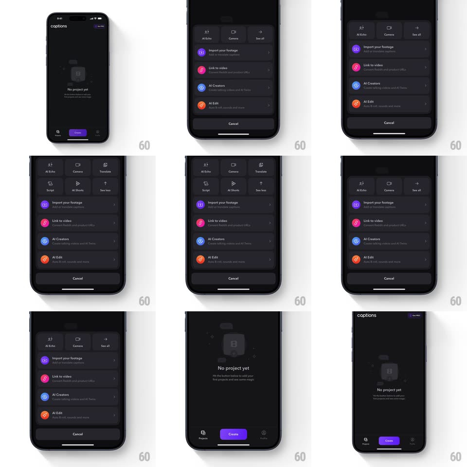

Media
Frame-by-frame

Rebuild this interaction 1:1: the Captions create sheet - tapping Create slides up a dark sheet listing quick actions (Import your footage, Link to video, AI Creators, AI Edit) with a compact 3-item tool row on top that expands into a full grid of tools, pushing the list down, then collapses back.

Rebuild this interaction 1:1: the Captions create sheet - tapping Create slides up a dark sheet listing quick actions (Import your footage, Link to video, AI Creators, AI Edit) with a compact 3-item tool row on top that expands into a full grid of tools, pushing the list down, then collapses back.
## Integration
Integration: stack-agnostic spec - springs given as stiffness/damping, timed motions as duration + curve; map every value to your framework and animation library of choice.
## Scene
Empty projects home ("No project yet", purple Create button). The sheet: top row of tool chips (AI Echo, Camera, See all / grid), below it a list of rows with colored circular icons (purple Import your footage, pink Link to video, blue AI Creators, orange AI Edit), and a Cancel button at the bottom.
## Motion spec
Pattern: bottom sheet with an expanding tool grid.
- Open: the sheet rises from the bottom (spring ~380/26, 350ms) over a dimmed home (opacity 0.4).
- Expand: tapping the row's expand affordance grows the 3-chip row into a 2-row grid of six tools (AI Echo, Camera, Translate, Script, AI Shorts, See less); the grid height animates (spring ~340/24, 350ms) and pushes the action list down 1:1 with the growth; grid items fade in staggered 40ms.
- Collapse: reverse - grid folds back to the chip row, list pulls back up.
- Dismiss (Cancel or swipe): the sheet slides down (spring ~380/28) and the home undims.
## Calibration
- The list rows never reflow - they translate as a block, pushed and pulled by the grid's height.
- Sheet corners stay rounded (~16px) throughout the motion.
## Reduced motion
Sheet and grid crossfade (200ms) instead of springing; list still translates with the height change.
## Don't miss
- "See all" becomes "See less" - the expand affordance toggles its label.
- The sheet sits above the tab bar, not replacing it.